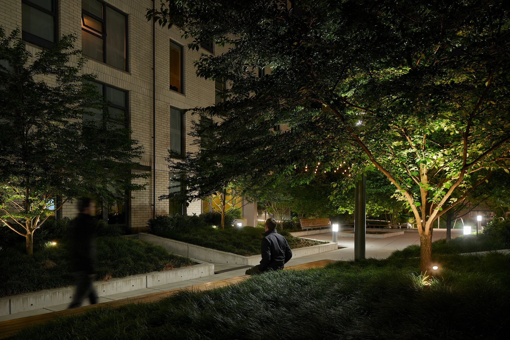

Ryan Filgas
In addition to my work as an artist I lead a career in software engineering at Standard Insurance. As I find myself in a highly technical field it's refreshing to brush off the code in my free time and engage in creating artwork and the community that surrounds it. Below is a brief summary of credentials. Please see LinkedIn for up to date details.
More info about my work as an artist: » Here
Work Experience
- Software Engineer III
- The Standard | March 2025 – Present
- Software Engineer II
- The Standard | Aug 2023 – March 2025
- Software Engineering Intern
- The Standard | Jan 2023 – Jul 2023
- Site Reliability Engineering Intern
- Apex Fintech Solutions | Jul 2022 – Dec 2022
- Software Engineering Intern
- Trimble Inc. | Jan 2022 – Jun 2022
- Technical Course Support Specialist and Grader
- Portland State University | Jan 2021 – Dec 2021
Education
Masters in Computer Science | Portland State University
Study Areas Covered (GitHub repos linked): Computer Science Core | ML/AI | Data Engineering | Front End
ML/AI and CV Concepts Implemented
Technologies: Keras, TensorFlow, OpenCV, NumPy, Pandas, MatPlotLib, SciPy, SciKit-Learn, Seaborn, MPL Toolkits
Implementations: Stochastic Gradient Descent, Naive Bayes Classification, K-Means Classification, Transfer Learning, Low Rank Model Compression, DoG and Sobel Filters, SIFT Visualization, Optical Flow, GradCAM DL-Saliency using VGG16 CNN Model, Image Classification Using InceptionResNetV2, K-Means Image Segmentation
Data Engineering Concepts Implemented
Technologies: GCP, Confluent Kafka, PostgreSQL, Pandas, REST APIs, GeoJSON, MapBox, Python
Data: Integration, Maintenance, Storage, Transformation, Transport, Validation
Feel free to reach out via the social icons below. I'm looking forward to meeting!